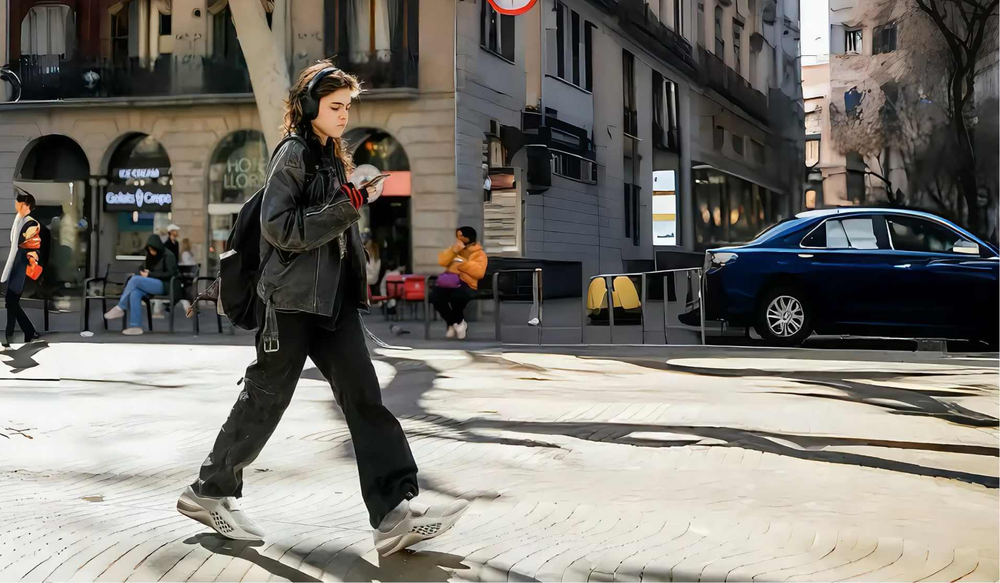
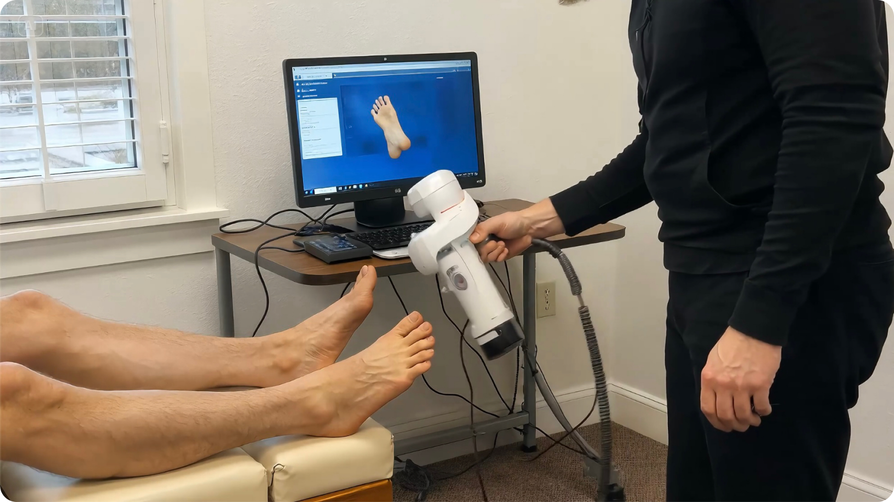
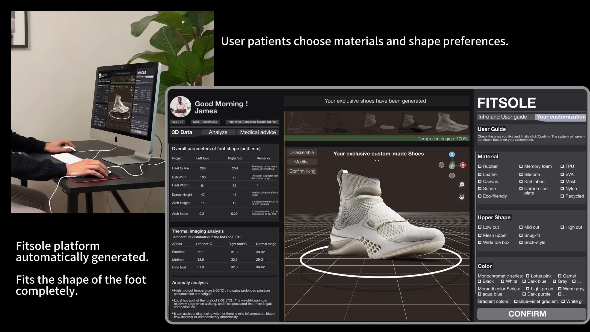
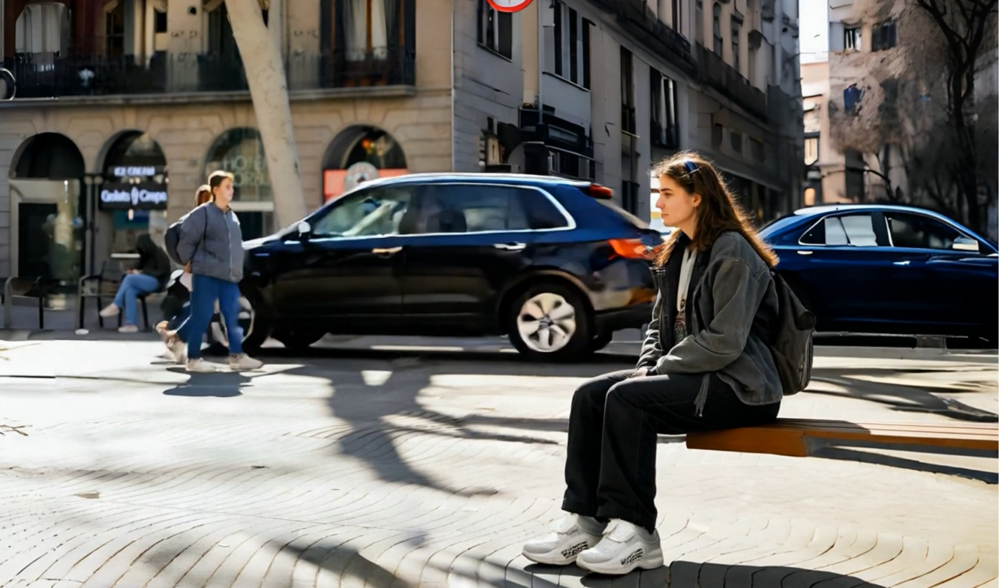
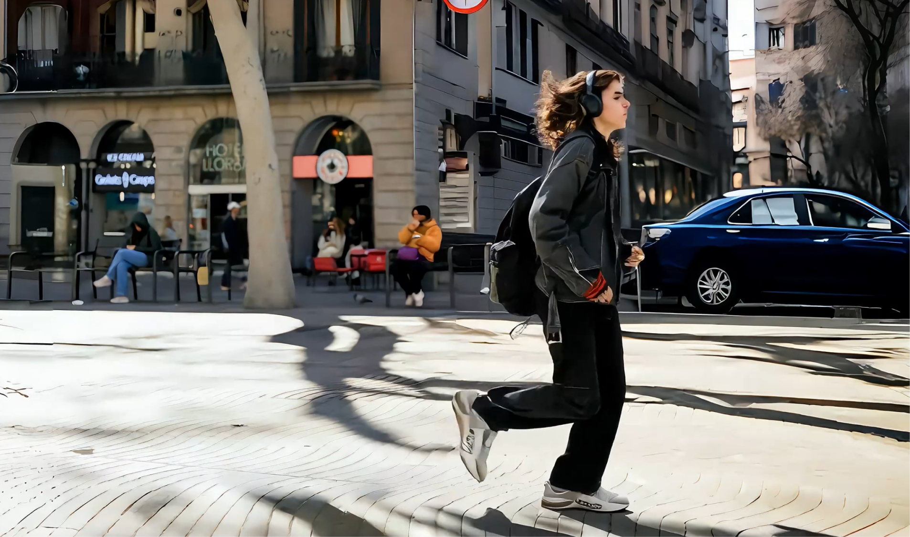
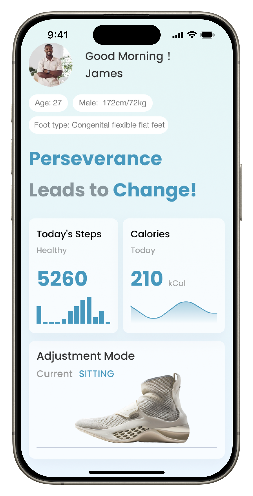
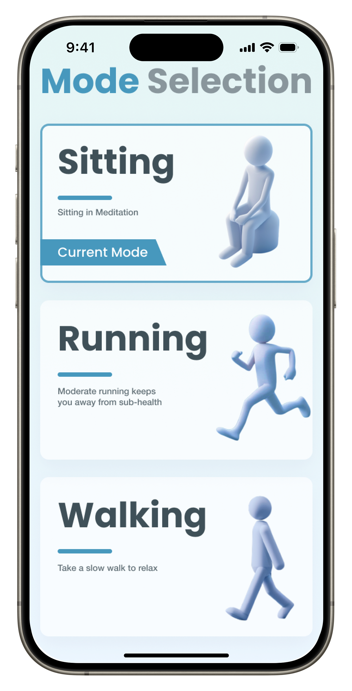
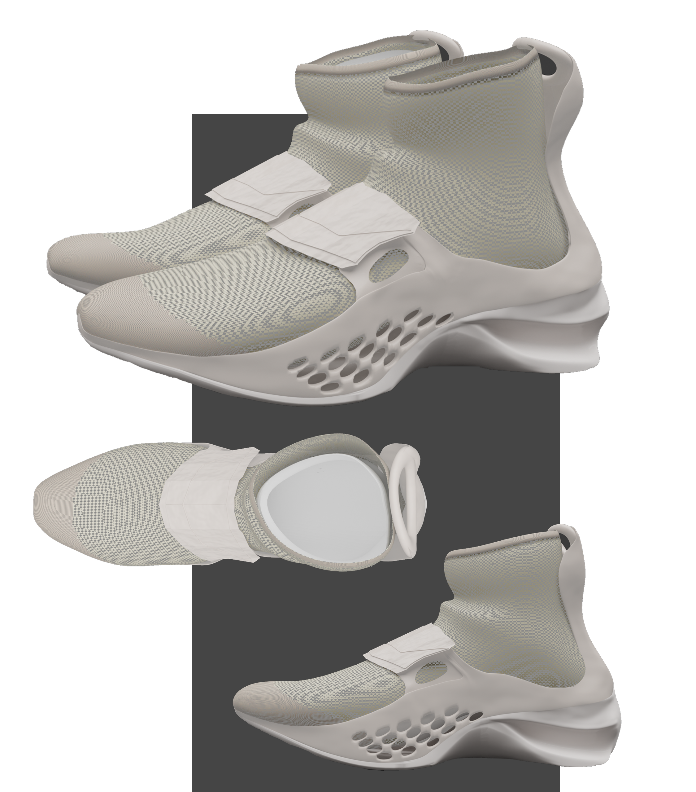
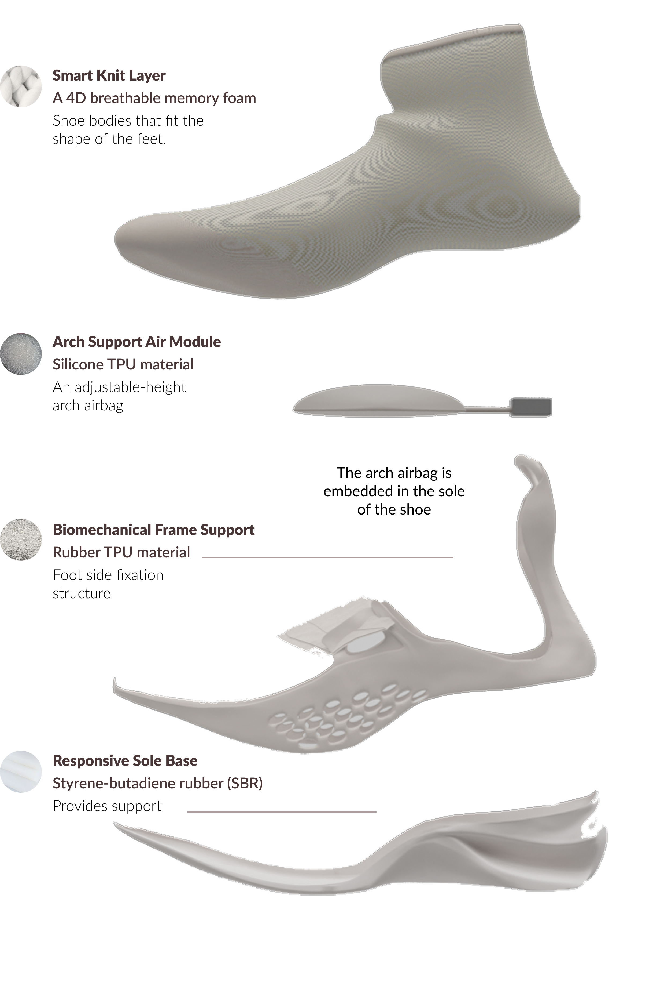
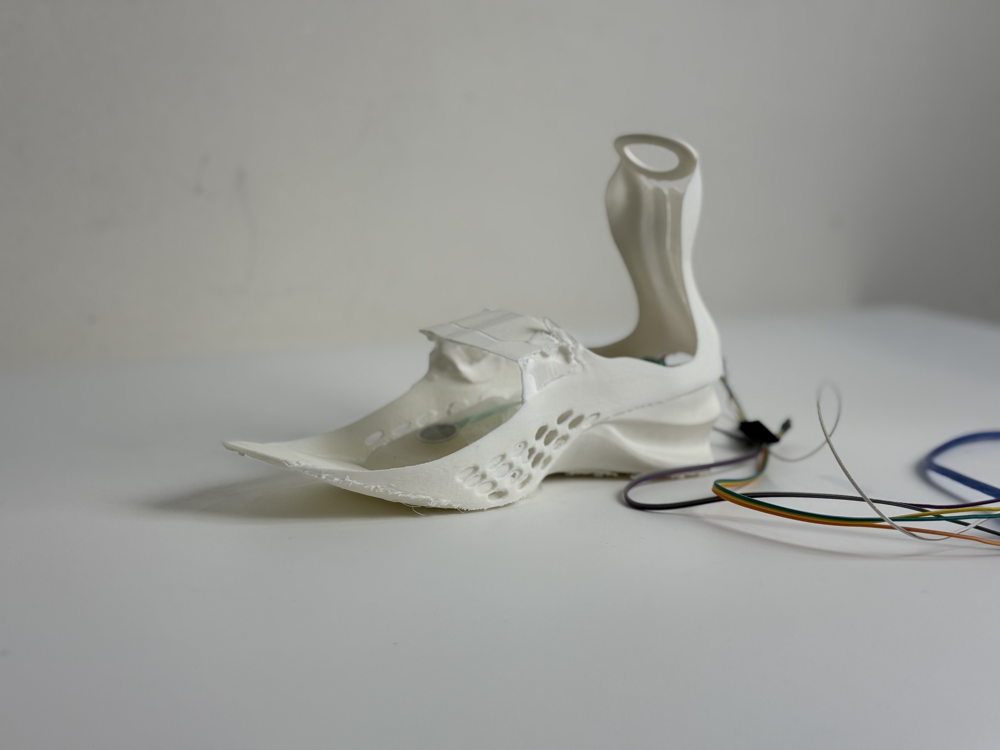

04 / Fitsole / Adaptive footwear / 2025
Support that responds
to everyday life.
Fitsole explores how footwear could adapt to changing activity and load. A layered shoe concept combines a fitted upper, pressure sensing and an inflatable arch-support module, with a proposed mobile interface for selecting an activity mode.

Design question
How could support adapt
without constant adjustment?
The original study focuses on people with flat feet and explores limitations of fixed support and fit. The design question is how a single wearable could respond to different everyday activities while giving the wearer a way to select the context.
Project demo
From concept to physical prototype.
Watch on Vimeo ↗ · Original concept demonstration.
The complete service concept
A personal fit.
A product that can change with you.
Fitsole connects foot assessment, customization, everyday support and longer-term renewal. The wearer chooses how the shoe looks; the proposed support system responds to how it is used.
- Assess & scan
- Customize
- Receive
- Use & adapt
- Renew or refit
01 / Assess & scan
Start with the foot, not a standard shoe size.
The proposed journey begins with a flat-foot assessment, followed by a 3D foot scan. A personal record of foot shape and arch geometry informs the fitted upper and the initial support configuration.

Retain the scan as a reference for future customization and comparison when foot shape changes.
02 / Personalize
Choose the appearance. Keep the fit personal.
The customization interface presents a shoe model based on the foot record. The wearer explores designs and chooses the upper shape, material and color, then confirms their preferred combination.

03 / Receive
A customized shoe, delivered to the wearer.
After confirmation, the proposed service produces the selected design and sends the footwear by courier. The fit record remains available for future updates.
04 / Use & adapt
Choose a mode. Let support respond.
The mobile concept lets the wearer select Sitting, Walking or Running. Alongside this explicit choice, the product concept proposes sensing changes in use and automatically adapting support, reducing the need for repeated manual adjustment.
The physical prototype supports pressure sensing and pump inflation. Activity recognition and app-controlled mode switching are proposed interactions.
See the three modes and mobile UI ↓05 / Renew or refit
Change what needs changing.
Foot shape unchanged
A new look, with the same support base.
If the wearer wants a different appearance and the fit remains suitable, replace the outer decorative or upper components while retaining the support system and sole. The concept aims to extend the product’s useful life.
Foot shape or arch changes
Rescan, compare and customize again.
If a later assessment records a change in foot shape or arch geometry, compare the new scan with the earlier record and customize replacement components for the updated fit. Any improvement would need to be established through assessment; it is not an outcome demonstrated by this project.
Assessment, customization, delivery and renewal describe the proposed service. They were not deployed as an end-to-end system.
Two ways to adapt
Sense the load.
Let the wearer choose the context.
Pressure detection and pump inflation ran in the physical prototype. The documented logic assigns readings to three ranges and uses a relay to trigger corresponding inflation durations. Precise adjustment was not achieved.
The mobile concept lets the wearer move from the overview into mode selection. Running, walking and sitting represent different everyday contexts.

Sitting
A proposed lower-support setting for seated activities.
Walking
A proposed setting for everyday walking and commuting.

Running
A proposed support setting for more active movement.


Modular product system
Keep the support.
Renew the outer layer.


Replaceable outer layer
Customize the look and fit of the upper. When foot shape is unchanged, the concept allows the outer components to be refreshed without replacing the whole shoe.
Arch-support air module
The internal air module changes support through inflation.
Retained frame and sole
The frame and sole carry the support mechanism. Keeping these components is the proposed route to a longer product life.
From concept to prototype
A physical model.
A concrete response rule.

The prototype uses three sensor-reading ranges to control inflation for 2, 4 or 6 seconds.
What remains to validate
Make the experience
predictable and understandable.
The next evaluation would need to examine comfort over time, whether wearers understand the current mode, how they stop or override an adjustment, and what happens if sensing or inflation fails.
Pressure sensing and inflation worked in the physical prototype; precise support adjustment remains to be developed. The mobile interface is a separate concept.